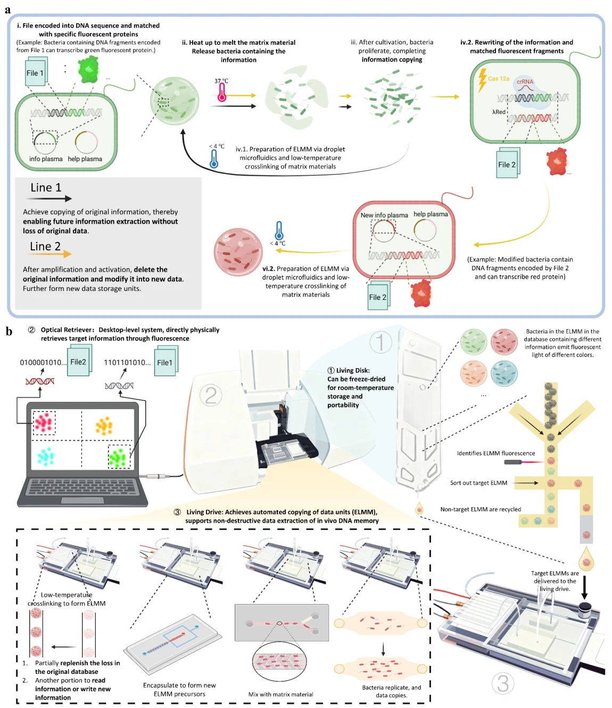
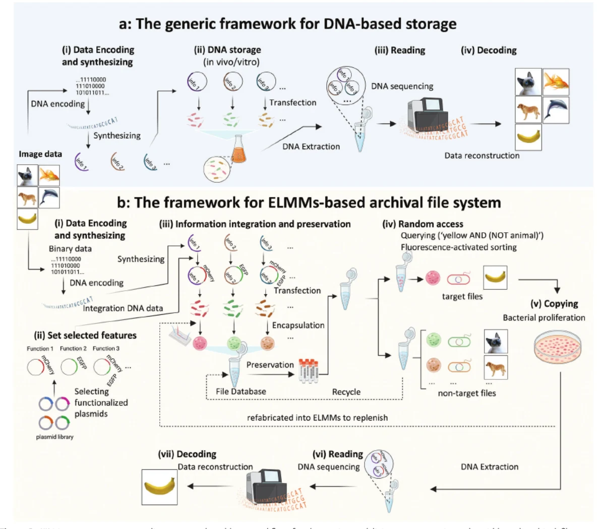
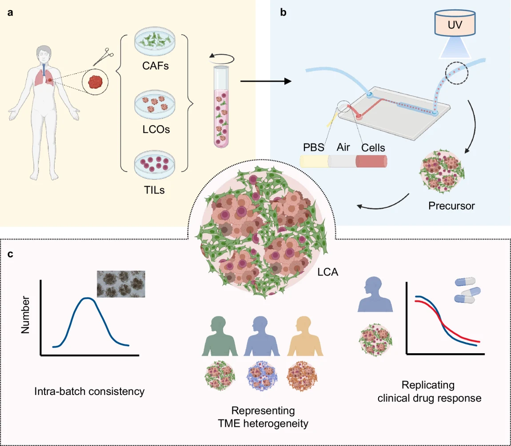

Tsinghua University
Ph.D. in Mechanical Engineering · Expected Dec. 2026
Advisor: Prof. Zhuo Xiong · GPA: 3.8 / 4.0Tsinghua University · Beijing, China
Ph.D. Candidate in Mechanical Engineering
Tsinghua University
Engineered Living Materials · Microfluidics · Biofabrication · Automation
I develop engineered living systems for DNA data storage, retrieval, regeneration, rewriting, and automated operation.
01 / Profile
Hao Luo is a Ph.D. candidate in Mechanical Engineering at Tsinghua University. His research asks how living systems can become physically addressable, regenerative information media. He combines DNA encoding, plasmid and bacterial engineering, droplet microfluidics, hydrogel biofabrication, dry-state preservation, optical retrieval, and scientific automation. His doctoral work established engineered living memory microspheroids (ELMMs) (Advanced Materials, 2025) as file-level storage units for random-access in vivo DNA storage, then extended them into a regenerative Living Disk–Drive architecture (Advanced Materials, 2026) that supports release, regrowth, re-encapsulation, database replenishment, and an interface for information rewriting. Alongside this core program, he has contributed to patient-derived cancer assembloid research (Nature Communications, 2024; Small Methods, 2024), focusing on microfluidic platform design and fabrication process development. His broader goal is to translate biological programmability into integrated, reliable engineering systems.
骆浩是清华大学机械工程博士研究生，研究核心是如何将活体系统转化为可物理寻址、可再生的信息介质。他将 DNA 编码、质粒与工程菌设计、液滴微流控、水凝胶生物制造、干态保存、光学检索与科研自动化贯通起来。博士期间，他建立了工程化活体记忆微球（ELMM）（Advanced Materials, 2025）这一文件级存储单元，实现活体 DNA 数据的随机访问；进一步发展出可再生 Living Disk–Drive 架构（Advanced Materials, 2026），支持释放、扩增、再封装、数据库补库与信息改写接口。除核心方向外，他还参与患者来源肿瘤类组装体研究（Nature Communications, 2024；Small Methods, 2024），主要负责微流控平台设计与制造工艺开发。他的长期目标是将生物可编程性转化为可靠的一体化工程系统。
02 / Background
Ph.D. in Mechanical Engineering · Expected Dec. 2026
Advisor: Prof. Zhuo Xiong · GPA: 3.8 / 4.0B.Eng. in Mechanical Engineering
GPA: 3.77 / 4.0 · Rank: 3 / 10603 / Focus
From programmable cells to integrated living information systems.
DNA storage · Engineered bacteria · In vivo storage · Information rewriting
Living microspheroids · ELMM · Functional materials · Regenerative storage
Droplet microfluidics · Hydrogel microspheres · Organoids · Assembloids
Machine vision · Automated retrieval · Scientific instrumentation · System integration
04 / Selected work
Three projects define the scientific arc of my work.

Advanced Materials · 2026A regenerative living DNA storage architecture
A system-level architecture connects a lyophilized Living Disk, fluorescence-based Optical Retriever, and desktop Living Drive. Retrieved ELMMs release their encoded bacteria, which expand and are re-encapsulated to replenish the database—moving living DNA storage from static preservation toward repeated operation.

Advanced Materials · 2025A physical file architecture for random-access living DNA storage
ELMMs integrate data-encoded bacteria, functional plasmids, and hydrogel microspheres into discrete living file units. Intracellular fluorescence acts as a physical index for file-level selection and Boolean queries, while freeze-drying enables compact dry-state preservation and later recovery.

Nature Communications · 2024 · CC BY 4.0Microfluidic fabrication for patient-specific tumor models
Droplet microfluidics enables controlled fabrication of patient-derived lung and gastric cancer assembloids for tumor-microenvironment modeling and therapeutic drug screening.
05 / Scholarship
Hao Luo, JinKai Gao, XiangXiang Huang, YongCong Fang, TianYu Huang, YingKai Xia, ZeYang Yu, ChengHao Cao, and Zhuo Xiong
10.1002/adma.73806 ↗Hao Luo, Wen Huang, ZhongHui He, Yongcong Fang, Yueming Tian, and Zhuo Xiong
10.1002/adma.202415358 ↗06 / Engineering
Developed an automated chip-based DNA synthesis prototype and a collaborative encoding method; validated 13-nt DNA synthesis.
Built an OpenCV pipeline for image preprocessing, feature extraction, and dot-pattern recognition; packaged the core module as a DLL for system integration.
Designed dynamic focusing mechanics and embedded servo control, integrating STM32, sensors, actuators, simulation, and prototype manufacturing.
07 / Exchange
The Chinese University of Hong Kong · Oral Presentation
Changsha, China · Oral Presentation
Beijing, China · Oral Presentation
08 / Academic service
09 / Outreach
Selected coverage of living DNA storage research.
10 / Methods
Plasmid engineering · Bacterial culture · Droplet microfluidics · Hydrogel microspheres · Freeze-drying · Organoids / assembloids
SolidWorks · AutoCAD · ANSYS · STM32 · Arduino · CNC · 3D printing · System integration
Python · OpenCV · MATLAB · C/C++ · Image processing · DNA encoding · Scientific automation
11 / Connect
I welcome conversations about postdoctoral opportunities, academic collaborations, living DNA storage, biofabrication, and intelligent scientific instruments.
Hao Luo · 骆浩Tsinghua University · Beijing, China
longalonga888@163.com ↗